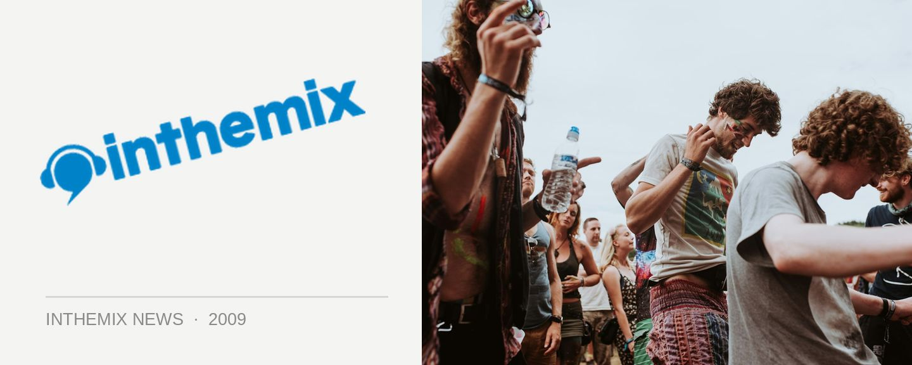

Sensation 'Ocean of White' lineup lands!
When Sensation returns to Melbourne’s Etihad Stadium this New Years Eve, it’ll be bringing along with it the spectacular ‘Ocean of White’ that’s been dazzling the whole of Europe over the past year – and now ITM can lift the lid on the lineup of artists who’ll be providing the music for all that underwater action! With a roster that reflects the sort of lineups we’ve seen at Sensation parties around the world this year, it’s a solid mixture of local DJs playing alongside some of the world’s biggest house jocks, as well as a welcome dose of trance to bring the evening to a close.
Kicking off the party will be Australian performers TV Rock, Kaz James as well as returning production whiz Dirty South, but after the spectacle that is the ‘megamix’ takes over, the big guns will be stepping up to the decks – Roger Sanchez and Sebastian Ingrosso will both be providing the big-room house tunes, followed by Dutch DJ/producer Richard Durand who impressed us all on the Trance Energy tour earlier this year.
Also on the trance tip will be the ‘In Riel Time’ arena that will be hosted by none other than Sied Van Riel along with Binary Finary and another secret international guest, playing alongside some of the finest names in Australian trance like Trent McDermott, Marlo and more.
Sensation ‘Ocean of White’ lineup:
Main Room:
TV Rock
Kaz James
Dirty South
‘Megamix’
Roger Sanchez
Sebastian Ingrosso
Richard Durand
In Riel Time:
Sied van Riel
Binary Finary
Trent McDermott
Marlo
Papa Smurf
Frost
+ Secret International Guest
Deluxe Areas:
Andy Murphy
Ben Morris
Bright White
Cauc-Asian
Chardy
Dan Miatt
Dave Pham
Dr Zok b2b Jen Tutty
Helena
Hoops
James Rosales
Jane & Ben Daffy
Jody McLeod
Jules Jay
Kikumoto Allstars
Luke McD
Mark John
Mr Stoj
Rowie Stav Elliott
Tribal Kings
Zelimir
Will you be there for Sensation this NYE? Keep your eyes peeled to our Festival Page for all the info you could possibly need, and check out the trailer below…